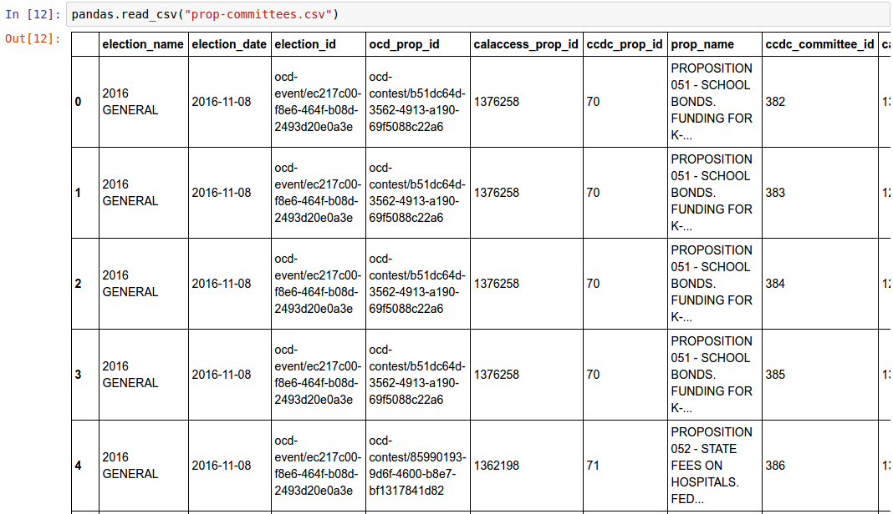

First Python Notebook¶
A step-by-step guide to analyzing data with Python and the Jupyter Notebook.
What you will learn¶
This six-hour tutorial will guide you through an investigation of money in politics using data from the California Civic Data Coalition.
You will learn just enough Python to work with the powerful pandas data analysis library, a popular open-source tool for working with large data files. The course will teach you how to use pandas to read, filter, join, rank, group and aggregate structured data.
You will learn how to record, remix and republish your analysis using the Jupyter Notebook, a browser-based app for writing code that is emerging as the standard for sharing reproducible research in the sciences.
And most important: you will see how these tools can increase the speed and veracity of your journalism.
About the data¶
The course is based on data provided by the California Civic Data Coalition, an open-source network of journalists and computer programmers working to ease access to the state’s jumbled, dirty and difficult database tracking money in politics.
The state’s campaign and lobbying data has been used to develop insightful journalism like:
- Campaign cash gives Nunez rich travel style, Los Angeles Times, Oct. 5, 2007
- California speaker gives Assembly’s juiciest jobs to biggest fundraiser, Center for Investigative Reporting, May 15, 2013
- Prop. 47 puts state at center of a national push for sentencing reform, Los Angeles Times, Nov. 1, 2014
- Connecting the donor dots in California outside spending campaigns, Sacramento Bee, May 26, 2016
- Sacramento’s new ‘slush funds’: Ballot-measure committees, San Jose Mercury News, Aug. 20, 2016
The goal of the coalition’s work is to make the data those reporters used easier to access, understand and analyze. Learn more about the status of the project and the data you can download here.
About the author¶
This course was first developed by Ben Welsh for a Octobert 2016, “watchdog workshop” organized by Investigative Reporters and Editors at San Diego State University’s school of journalism. It was revised for a February 2017, hands-on training of students at Stanford’s journalism school. It is scheduled to be taught a six-hour class at the annual conference of the National Institute for Computer-Assisted Reporting in March 2017.
Ben is the editor of the Data Desk, a team of reporters and programmers in the Los Angeles Times newsroom. He is also a co-founder of the California Civic Data Coalition.
Prelude: Prequisites¶
Before you can begin, your computer needs the following tools installed and working to participate.
- A command-line interface to interact with your computer
- Version 2.7 of the Python programming language
- The pip package manager and virtualenv environment manager for Python
- A code compiler that can install our heavy-duty analysis tools
Warning
Stop and make sure you have all these tools installed and working properly. Otherwise, you’re gonna have a bad time.
Command-line interface¶
Unless something is wrong with your computer, there should be a way to open a window that lets you type in commands. Different operating systems give this tool slightly different names, but they all have some form of it, and there are alternative programs you can install as well.
On Windows you can find the command-line interface by opening the “command prompt.” Here are instructions for Windows. On Apple computers, you open the “Terminal” application. Ubuntu Linux comes with a program of the same name.
Git and GitHub¶
Git is a version control program for saving the changes you make to files over time. This is useful when you’re working on your own, but quickly becomes essential with large software projects, especially if you work with other developers.
GitHub is a website that hosts git code repositories, both public and private. It comes with many helpful tools for reviewing code and managing projects. It also has some extra tricks that make it easy to publish web pages, which we will use later.
For this class you will need to have git installed and working from your command prompt.
If you need to install git, you can learned how by following one of these guides for Windows, Mac and Linux computers. Or you can try to download and install the program directly from its creators’ website.
After git is installed, you can verify it’s working on your command prompt by entering the follow code and hitting the enter key:
$ git --version
Note
You’ll note that the example above begins with a “$”. You do not need to type this. It is only a generic symbol
commonly used by geeks to indicate a piece of code should be run from the command line. On Windows, this prompt could even look quite different, likely starting with a phrase like C:\.
If git is installed and working, you should see something like this:
$ git --version
git version 2.9.3
Once that’s done, you should create an account at GitHub, if you don’t already have one. It shouldn’t cost you anything. The free plan is all that’s required to complete this lesson.
Python¶
For Apples¶
If you are using Mac OSX, Python version 2.7 is probably already installed and you can test to see what version, if any, is already available by typing the following into your terminal.
$ python -V
You should see something like this after you hit enter:
$ python -V
Python 2.7.12
If you get an error instead, Mac users should install Python by following these instructions offered by The Hitchhikers Guide to Python.
For Windows¶
Just like Apple users, Windows people should open their command prompt and investigate whether Python is already installed.
python -V
You should see something like this after you hit enter:
python -V
Python 2.7.12
If not Windows users can find a similar installation guide here which will have you try downloading and installing Python from here. After that’s done, ensure Python is installed by reopening the command prompt and running the command above again.
pip and virtualenv¶
The pip package manager makes it easy to install open-source libraries that expand what you’re able to do with Python. Later, we will use it to install everything needed to create a working web application.
Verify pip is installed with the following.
pip -V
If you don’t have it already, you can get pip by following these instructions.
The virtualenv environment manager makes it possible to create an isolated corner of your computer where all the different tools you use to build an application are sealed off.
It might not be obvious why you need this, but it quickly becomes important when you need to juggle different tools for different projects on one computer. By developing your applications inside separate virtualenv environments, you can use different versions of the same third-party Python libraries without a conflict. You can also more easily recreate your project on another machine, handy when you want to copy your code to a server that publishes pages on the Internet.
You can check if virtualenv is installed with the following.
virtualenv --version
If you don’t have it, install it with pip.
pip install virtualenv
# If you're on a Mac or Linux and get an error saying you lack permissions,
# try again as a superuser.
sudo pip install virtualenv
If that doesn’t work, try following this advice.
Code compiler¶
A code compiler is a tool that lets your computer installed more advanced software. It is required to take advantage of the pandas data analysis library.
For Apples¶
If you are using Mac OSX, you need to have XCode, Apple’s developer kit that includes a tool for compiling heavy-duty software.
You can make sure you’ve got it by running this on your command prompt.
xcode-select --install
For Windows¶
Windows users will need to download and install this Microsoft package, a compiler that will allow us to install other Python tools later.
With all that done, you’re now ready to start the class.
Act 1: Hello notebook¶
A Jupyter Notebook is a browser application where you can write, run, remix and republish code. It is free software you can install and run like any other open-source library. It is used by scientists, scholars, investors and corporations to create and share their work.
It is also used by journalists to develop stories and show their work. Examples include:
- “The Tennis Racket” by BuzzFeed and the BBC
- “Californians are paying billions for power they don’t need” by the Los Angeles Times
- “Machine bias” by ProPublica
The first step in our lesson is to get Jupyter’s software installed. We’re going to start that process by creating a new development environment with virtualenv in your terminal. Name it after our application.
virtualenv first-python-notebook
Jump into the directory it created.
cd first-python-notebook
Turn on the new virtualenv, which will instruct your terminal to only use those libraries installed inside its sealed space. You only need to create the virtual environment once, but you will need to repeat these “activation” steps each time you return to working on this project.
# In Linux or Mac OSX try this...
. bin/activate
# In Windows it might take something more like...
cd Scripts
activate
cd ..
Use pip on the command line to install Jupyter Notebook.
pip install jupyter
Start up the notebook from your terminal.
jupyter notebook
That will open up a new tab in your default web browser that looks something like this:

Click the “New” button in the upper right and create a new Python 2 notebook. Now you are all setup and ready to start writing code.
Do not stress. There is nothing too fancy about it. You can start by just doing a little simple math.
Type the following into the first box, then hit the play button in the toolbar above the notebook (or hit SHIFT+ENTER on your keyboard).
2+2

There. You have just written your first Python code. You have entered two integers and added them together using the plus sign operator. Not so bad, right?
Now it is the time for us to get our hands on some real data and get some real work done. To do that, we need some real tools.
Act 2: Hello pandas¶
Lucky for us, Python is filled with functions to do pretty much anything you’d ever want to do with a programming language: navigate the web, parse data, interact with a database, run fancy statistics, build a pretty website and so much more. Creative people have put these tools to work to get a wide range of things done in the arts, technology and even outer space.
Some of those tools are included in a toolbox that comes with the language, known as the standard library. Others have been built by members of Python’s developer community and need to be downloaded and installed from the web.
For this exercise, we’re going to install and use pandas, a tool developed at a financial investment firm that has become a leading open-source tool for accessing and analyzing data.
We’ll install pandas the same way we installed the Jupyter Notebook earlier: Our friend pip. Save your notebook, switch to your command prompt and hit CTRL-C. That will kill your notebook and return you to the command line. There we’ll install pandas.
pip install pandas
Now let’s restart our notebook and get back to work.
jupyter notebook
Use the next open notebook cell to import the pandas library for use in our script. Type in the following and hit the play button again.
import pandas
If nothing happens, that’s good. It means you have pandas installed and ready to work.
If you get an error message, return to the prequisites section above and make sure you have everything installed properly. If you do and it still doesn’t work, copy and paste the tail end of your error message into Google. Among the results there will almost certainly be others working through the same problem.
Note
As we continue through the lesson you should assume all of the code we write is in a new cell run separately from the previous line.
Breaking up your code like this so you can run it bit by bit is one of the big advantages of the Jupyter Notebook. If you get an error after you run a cell, look carefully at your code and see that it exactly matches what’s been written in the example.
Once they match, try running it again. Don’t worry, that kind of feedback loop is the workaday struggle of computer programming.
Now that we’ve got pandas loaded, let’s put it to work.
Until last November, the use and sale of marijuana for recreational purposes was illegal in California. That changed when voters approved Proposition 64, which asked voters if the practice ought to be legalized. A yes vote supported legalization. A no vote opposed it. In the final tally, 57% of voters said yes.
Your mission, should you choose to accept it, is to analyze lists of campaign committees and contributors to figure out the biggest donors both for and against the measure.
To start click here to download a list of last November’s 17 ballot measures and their affiliated fundraising committees.
The data are structured in rows of comma-separated values. This is known as a CSV file. It is the most common way you will find data published online. Save the file with the name prop-committees.csv in the same directory where you made your notebook.
Open the file in your notebook using the read_csv function in pandas.
pandas.read_csv("prop-committees.csv")
After you run the cell, you should see something like this.
It is a DataFrame where pandas has structured the CSV data into rows and columns, just like Excel or other spreadsheet software might. The advantage offered here is that rather than manipulating the data through a haphazard series of clicks and keypunches we will be gradually grinding down the data using a computer programming script that is 100% transparent and reproducible.
In order to do that, we need to store our DataFrame so it can be reused in subsequent cells. We can do this by saving in a “variable”, which is a fancy computer programming word for a named shortcut where we save our work as we go.
Go back to your initial cell and change it to this. Then rerun it.
props = pandas.read_csv("./docs/_static/prop-committees.csv")
After you run it, you shouldn’t see anything. That’s a good thing. It means our DataFrame has been saved under the name props, which we can now begin interacting with in the cells that follow. We can do this by calling “methods” that pandas has made available to all DataFrames. There are dozens of these that can do all sorts of interesting things. Let’s start with some easy ones that analysts
use all the time.
First, to preview the first few rows of the dataset, try the head method. Hit the + button in the toolbar to add a new cell below the first one. Type this in it and hit the run button again.
props.head()

To get a look at all of the columns and what type of data they store, add another cell and try info.
props.info()

Look carefully at those results and you see we have more than 100 links between committees and propositions. That’s interesting on its own, but our goal is to focus in on just one: Prop 64.
Quick studies will have already noted the prop_name column where each committee’s affiliation is stored. Let’s use pandas to drill down on it. To see its contents separate from the rest of the DataFrame, add its name to the variable following a period. That should list out the whole thing.
props.prop_name

One of the many cool tricks built in to pandas is the ability to total up the frequency of values in a column with the value_counts method. We can use it here to total up how many committees were active for each proposition.
props.prop_name.value_counts()

You may have noticed that both of the previous methods did not return a clean looking table in the same way as head. It’s often hard to anticipate, but in these cases and many others pandas will sometimes return an ugly Series rather than more aesthetically pleasing (and powerful) DataFrame.
If that sounds like a bunch of mumbo jumbo, that’s because it is! Like most computer programming tools, pandas has its own odd quirks that you have to pick up as you go. The difference between a Series and a DataFrame is one of those. The key is to not worry about it too much and keep hacking.
In most instances, if you have an ugly series generated by a method like value_counts and you want to convert it into a DataFrame you can do so by tacking on the reset_index method onto the tail end. Why? Again the answer is “because pandas says so.” So let’s play along.
props.prop_name.value_counts().reset_index()

Now that we’ve seen all the propositions in the dataset, we’re ready to take a crucial step towards our goal by filtering the list down to just those committees that supported or opposed Proposition 64.
We can do that by copying the full name of the proposition that appears in the dataset and inserting it into the following statement, which follows the pandas system for filtering a DataFrame.
You start with the variable you want to filter, and then create an evaluation by combining a column with an “operator” like == or > or < with a value to compare the field against.
props[props.prop_name == 'PROPOSITION 064- MARIJUANA LEGALIZATION. INITIATIVE STATUTE.']

Now that we’ve seen what it outputs, we should save the results of that filter into new variable separate from the full list we imported from the CSV file.
prop = props[props.prop_name == 'PROPOSITION 064- MARIJUANA LEGALIZATION. INITIATIVE STATUTE.']
The find out how many records are left after the filter, we can use Python’s built-in len function to inspect our new variable.
len(prop)

With that we’re ready to move on to a related, similar task: Importing all of the individual contributions reported to last year’s 17 ballot measures and filtering them down to just those supporting and opposing Proposition 64.
We’ll start by downloading this second CSV file and saving it to the same directory as this notebook with the name contributions.csv. We’ll then open it with read_csv and save it as a new variable just as we did above.
contribs = pandas.read_csv("contributions.csv")
Warning
The contributions file you’re downloading is an experimental early release from the California Civic Data Coalition’s effort to streamline the state’s jumbled, dirty and disorganized official database. It has not yet been fully verified as accurate by our team and any conclusions you draw from it should be considered as provisional.
If you want to base a news report off the analysis you do here, you should take the additional step of comparing the numbers you produce against the official data released by the Secretary of State.
Just as we did earlier, you can inspect the contents of this new file with the head method.
contribs.head()

You should also inspect the columns using the info method. Running these two tricks whenever you open a new file is a good habit to develop so that you can carefully examine the data you’re about to work with.
contribs.info()

Our next job is to filter down this list, which includes all disclosed contributions to all proposition campaigns, to just those linked to Proposition 64.
We could try to do this with a filter, as we did above with the committees. But look carefully at the columns listed above in the contribution file’s info output. You will notice that this file contains a field called calaccess_committee_id that is identical to the one found in the committee CSV.
That’s because these two files are drawn from a “relational database” that tracks a variety of information about campaigns using an array of tables linked by common identifiers. In this case, the unique identifying codes of committees in one table can be expected to match those found in another.
We can therefore safely join the two files using the `pandas merge method. By default this method will return only those rows with ids found in both tables. That means that if we join the full contributions file to our filtered list of Proposition 64 committees, only the contributions to the Proposition 64 committees will remain.
Here’s how to do it. It’s as simple as passing both variables to merge and specifying which field we’d like to join with. We will save the result into another new variable.
merged = pandas.merge(prop, contribs, on="calaccess_committee_id")
That new DataFrame variable can inspected just as the ones above.
merged.head()

After all that we have created a new dataset that includes only contributions supporting and opposing Proposition 64. We’re ready to move on from preparing our data to interviewing it.
Act 3: Hello analysis¶
In some ways, your database is no different from a human source. Getting a good story requires careful, thorough questioning. In this section we will move ahead by conducting an interview with pandas to pursue our quest of finding out the biggest donors to Proposition 64.
Let’s start with something easy. What were the ten biggest contributions? We can find the answer by using the sort_values method to rearrange our list using the amount field.
merged.sort_values("amount")

Note that returns the DataFrame resorted in ascending order from lowest to highest. To answer our question you’ll need to reverse it. Here’s how:
merged.sort_values("amount", ascending=False)

You can limit the result to the top five by returning to the head method and passing in the number of results we’d like.
merged.sort_values("amount", ascending=False).head(5)

Question one answered. Here’s number two: What is the total sum of contributions that have been reported?
To answer that let’s start by getting our hands on amount, the column with the numbers in it. We can do that just as we did with other columns above.
merged.amount

Now add up the column’s total using the pandas method sum.
merged.amount.sum()

There’s our big total. Fun fact: This number is guaranteed to be lower than the totals reported by the campaigns. Why? Campaigns are only required to report the names of donors over $200, so our data is missing all of the donors who gave smaller amounts of money.
The overall totals are reported elsewhere in lump sums and cannot be replicated by adding up the individual contributions. Understanding this is crucial to understanding not just this data, but all campaign finance data.
Adding up a big total is all well and good. But we’re aiming for something more nuanced. We want to separate the money spent for the proposition from the money spent against it. To do that, we’ll need to return to the filtering trick we learned above.
First let’s look at the column we’re going to filter by, committee_position.
merged.committee_position
Now let’s filter our merged table down using that column and the pandas filtering method that combines a column, an operator and the value we want to filter by.
merged[merged.committee_position == 'SUPPORT']
Let’s stick the result in a variable.
support = merged[merged.committee_position == 'SUPPORT']
And count how many contributions are in this new, more limited set.
len(support)

We can now use this new variable to rank the five biggest supporting contributions by using sort_values again.
support.sort_values("amount", ascending=False).head(5)

Now let’s repeat all that for opposing contributions. First the filter into a new variable.
oppose = merged[merged.committee_position == 'OPPOSE']
Then a count.
len(oppose)

Then a ranking.
oppose.sort_values("amount", ascending=False).head(10)

Now sum up the total disclosed contributions to each for comparison. First the opposition.
oppose.amount.sum()

Then the supporters.
support.amount.sum()

The support is clearly larger. But what percent is it of the overall disclosed total? We can find out by combined two sum calculations using the division operator.
support.amount.sum() / merged.amount.sum()

We’ve encountered a lot of different committees as we’ve explored the data. A natural question follows: Which ones have raised the most money?
To figure that out, we’ll need to group the data by that column and then sum up the amount for each. We can do that be using the pandas groupby method and the sum trick we’ve already learned.
If you scroll back up and look carefully as the info command we ran after merging out data, you will noticed it includes a column named committee_name_x and commitee_name_y. That is because the field was present on both our committee list and our contributions list prior to joining them together. Rather than drop one of them, pandas is trained to keep them both and to append suffixes to the end.
That’s the field we want to group by here. Since they are identical, it doesn’t matter which one we pick. Let’s go with x.
merged.groupby("committee_name_x").amount.sum()

Again our data has come back as an ugly Series. To reformat it as a pretty DataFrame use the reset_index method again.
merged.groupby("committee_name_x").amount.sum().reset_index()

Sorting the biggest totals to the top is as easy as appending the sort_values trick we already know to the end. And voila there’s our answer.
merged.groupby("committee_name_x").amount.sum().reset_index().sort_values("amount", ascending=False)

Finding the top contributors is just as easy. We only need to substitute the name fields into the groupby method.
merged.groupby(["contributor_firstname", "contributor_lastname"]).amount.sum().reset_index().sort_values("amount", ascending=False)

Note
You should be noticing that several of the top contributors appear to be the same person with their name entered in slightly different ways. This is another important lesson of campaign contributions data. Virtually none of the data is standardized by the campaigns or the government. The onus is on the analyst to show caution and responsibly combine records where the name fields refer to the same person.
To find out if each contributor supported or opposed the measure, you simple add that field to our groupby method.
merged.groupby(["contributor_firstname", "contributor_lastname", "committee_position"]).amount.sum().reset_index().sort_values("amount", ascending=False)
You’ve done it. Our brief interview is complete and you’ve answered the big question that started our inquiry. If you’re interested in continuing the interview, see if you can answer a few more questions on your own. Here are some ideas:
- What percentage of donations came from people who live outside of California?
- What are the top employers of donors who gave for and against the measure?
- Which committees had the fewest donors?
Act 4: Hello science¶
After all this, you might be thinking “Computer programming sounds great, but couldn’t I have done it more efficiently in Excel?”
Depending on how slick you are with a spreadsheet, the answer might be yes. With the exception of the pandas trick that merged the two files most of what we did could be achieved with filters and pivot tables taught in spreadsheet classes.
However, for all their flexibility, one of the great weaknesses of working with spreadsheets is that the numerous steps that go into conducting a complex analysis have to be repeated each time, by hand, whenever you want to replicate your work.
For this reason, some scientific projects that aim for transparency and reproducibility are now requiring that each step in a data analysis be documented in a Jupyter Notebook.
That’s good for its own sake and will help catch errors during pre-publication review, but it has a huge added benefit. At any time you can slightly modify your code and rerun the entire thing from the start.
In this case it means we could instantly reproduce our analysis for each of the 17 ballot measures and conduct a similar data interview in a matter of seconds.
To give it a try, scroll back up to the stop of the notebook and reexamine the list of unique propositions we output with the value_counts method. You can pick any of them. For this example I am going to pick Proposition 66, which sought (and failed) to end California’s death penalty.
Copy the proposition’s full name and replace Proposition 64’s name in the nearby cell where we created the prop variable.
prop = props[props.prop_name == 'PROPOSITION 066- DEATH PENALTY. PROCEDURES. INITIATIVE STATUTE.']
Now pull down the Cell menu at the top of the notebook and select the Run all option.

Moments later, the notebook will repopulate with the answers to all of questions. This time it will be analyzing Prop 66 instead. Try doing that with Excel.
That’s the end of our lesson for now. We’ll be working to expand it in the coming weeks as we prepare a longer version for the National Insitute of Computer-Assisted Reporting conference in Jacksonville. If you have any thoughts about how it could be improved or expanded, please email me at ben.welsh@gmail.com. You can learn more about our open-source effort to fix California’s cryptic campaign-finance database at californiacivicdata.org.
Act 5: Hello Internet¶
In this act, we will publish your notebook to the Internet using GitHub, a social network for sharing and collaborating on code. GitHub is a platform frequently used by journalists and others to publish their notebooks. As listed above, examples include:
- “The Tennis Racket” by BuzzFeed and the BBC
- “Californians are paying billions for power they don’t need” by the Los Angeles Times
- “Machine bias” by ProPublica
GitHub is an online extension of a command-line tool called git, a free and open-source version control tool for tracking and managing changes to code.
The first step in working with git is to convert a directory on your computer into a repository that will have its contents tracked going forward. You do that by returning to your terminal, hitting the CTRL-C key combination to return the standard command line and entering the following.
$ git init .
That will instruct git to initialize a new repository in your current folder.
Now visit GitHub and create a new public repository named first-python-notebook. Don’t check “Initialize with README.” You want to start with a blank repository.
Then connect your local directory to GitHub’s site with the following.
$ git remote add origin https://github.com/<yourusername>/first-python-notebook.git
Then officially add your notebook file to your repository for tracking with git’s add command.
# Using the '*' will add all files that end with ipynb, the notebook's standard file extension.
$ git add *.ipynb
Log its addition with Git’s commit command. You can include a personalized message after the -m flag.
$ git commit -m "First commit"
If this is your first time using Git, you may be prompted to configure you name and email. If so, take the time now. Then run the commit command above again.
$ git config --global user.email "your@email.com"
$ git config --global user.name "your name"
Now, finally, push your commit up to GitHub.
$ git push origin master
Reload your repository on GitHub and see your handiwork.
If looked at the example above, you’ve probably noticed that other notebook authors have helpfully summarized and annotated their code by inserting text, links and images between code blocks.

This is accomplished by adding new cells to your notebook and converting them from the default output, python code, to an alternative called Markdown. Markdown is a markup language that formats text. It’s a common lightweight alternative to HTML.
To create and print a new Markdown cell in your notebook, start up your notebook again from the terminal.
$ jupyter notebook
Now open your notebook file. At the top, add a new cell by clicking the plus button and hitting the up arrow button to move it to the top slot.
Click on the box and use your mouse to pull down the option menu that current reads “Code” from the toolbar. Replace it with “Markdown.”

Now click into the cell and type the following:
# First Python Notebook
Hello world!
Now hit the play button you will see the result. The first line has been turned into a header because that is how Markdown formats # at the front of lines. To learn more Markdown rules refer to its documentation.
Now try adding more cells to your document lower down and annotating individual lines of code before they are run.
After you’ve finished, save your notebook and return to your terminal so we can commit your work and push it to GitHub. Again, open the terminal and hit the CTRL-C key combination to halt the notebook.
Again you’ll want to tell git to log your notebook file changes using add.
$ git add *.ipynb
Now log your changes with commit.
$ git commit -m "Markdown"
Push your commit up to GitHub.
$ git push origin master
Soon after your Markdown edits should appear on the GitHub site alongside your code.
Epilogue: Hello charts¶
Python has a number of charting tools that can work hand-in-hand with pandas. The most popular is matplotlib. It isn’t the prettiest thing in the world, but it offers straightfoward tools for exploring your data by making quick charts. And, best of all, it can display in your Jupyter Notebook.
Before we start, we’ll need to make sure matplotlib is installed. Return to your terminal and try installing it with our buddy pip, as we installed other things before.
$ pip install matplotlib
After that completes, once again restart your notebook.
$ jupyter notebook
Now you can open your notebook and add a new cell below the imports that lets the system know you plan to make some charts and that it’s okay to surface them in the notebook.
%matplotlib inline

Now lets scroll down to the bottom of the notebook and pick up where we last left off in Act 4. As you may recall, we had rerun the notebook from the top with Proposition 66, the question of whether to end California’s death penalty.
If we want to chart out the top supporters of the proposition, we first need to select them from the dataset. Using the grouping and sorting tricks we learned earlier, the top 10 can returned like this:
top_supporters = support.groupby(
["contributor_firstname", "contributor_lastname"]
).amount.sum().reset_index().sort_values("amount", ascending=False).head(10)
We can then view them with a trick I bet you remember by now.
top_supporters.head(10)

Now that matplotlib is installed, making a simple chart is as simple as stringing the plot method onto the end of your DataFrame.
top_supporters.amount.plot.bar()

You can rotate the bar chart so that it is horizontal by subituting in the barh method.
top_supporters.amount.plot.barh()

The chart can be limited to the first five records by slipping in the head command.
top_supporters.head(5).amount.plot.barh()

What are those y axis labels? Those are the row number (pandas calls them indexes) of each row. We don’t want that. We want the names. We can swap them in by saving our chart to a variable and then using another matplotlib option, set_yticklabels to instruct the system which field to use.
chart = top_supporters.head(5).amount.plot.barh()
chart.set_yticklabels(top_supporters.contributor_lastname)

Okay, but what if I want to combine the first and last name? We have the data we need in two separate columns, which we can put together simply by inventing a new field on our data frame and, just like a variable, setting it equal to a combination of the other fields.
top_supporters['contributor_fullname'] = top_supporters.contributor_firstname + " " + top_supporters.contributor_lastname
We can see the results right here.
top_supporters.head()
Now using that in the chart is as simple as substituting in the set_yticklabels method we used above.

chart = top_supporters.head(5).amount.plot.barh()
chart.set_yticklabels(top_supporters.contributor_fullname)

That’s all well and good, but this chart is still pretty ugly. If you wanted to hand this data off to your graphics department, or try your hand at a simple chart yourself using something like Chartbuilder, you’d need to export this data into a spreadsheet.
Guess what? It’s this easy.
top_supporters.head(5).to_csv("top_supporters.csv")
And that’s it. You’ve completed this class. If you want to keep working, try inventing your own questions to ask and answer with the database, or find more information to analyze at californiacivicdata.org.
If you have any questions or feedback on the class, please contact me at ben.welsh@gmail.com.